Sacred Relics from other Star Systems
| 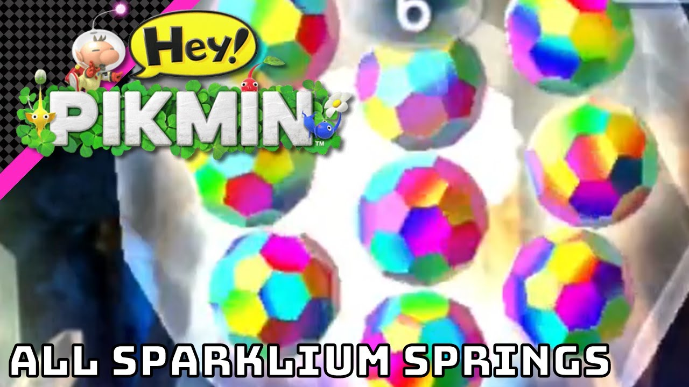 | 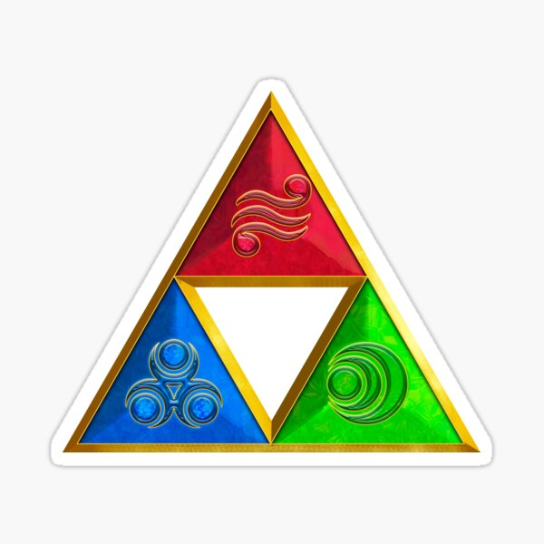 |
| 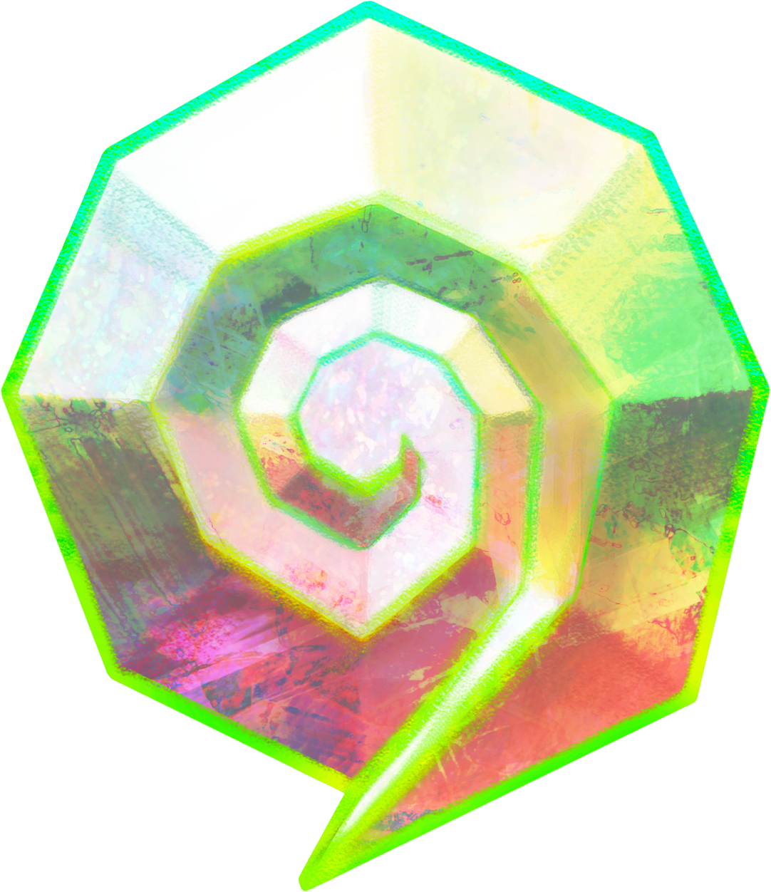 | 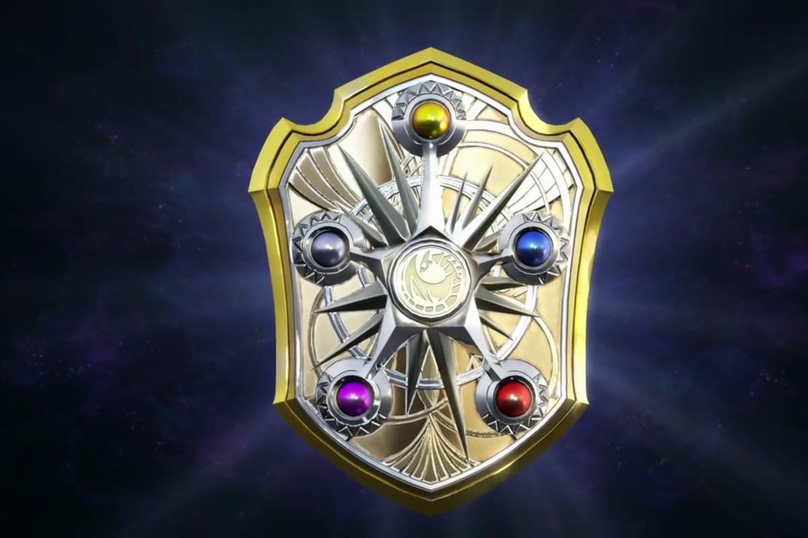 |
 |
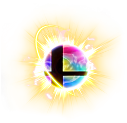 |
I'm Kevin and I am studying to be a software engineer And Am Passionate About The Environment And Ecosystem and helping anyone or anything that is oppressed systematically
Visit Portfolio.html Go to Pros and Cons of Meat| Pros | Cons |
|---|---|
| Delicious | Methane_Emmissions |
| Has Taurine | Carbon_emmissions |
| Big Or Small Family Owned Farms Treat And Raise Animals Kindly And Brings Families Together | Factory Farms In Industries Treat Animals Like Mere Objects |
| Big or Small Family Owned Farms Give Animals a Good Life Or Feel Remorse When It Is Time to Slaughter | Intensive Livestock Operations Is Industrialized Cruelty And Has No Remorse when time to slaughter |
| Makes for a good feast on occasions | Meat Industry Has Too Much Political Power |
| The Maneur can be used as a fertelizer for the field | Massive Maneur Pollution when not used as fertelizer |
| Farmers work very hard to bring us food, Farming brings rural Families together. | 80% Of edible vegetation is lost to this which could feed people |
| Animals Are Brought Into Existance | Abbatoirs Killed 88 Trillion And fish may be extinct by 2048 due to overfishing by Ocean Meat Industries |
| Fattens People Up And Has Cholesterol | |
| Too Much water used up, 1 stake takes up more water than leaving the tap on for 24 hours | |
| 4 Times (X) More Expensive Than Fruits And Vegetables | |
| Animal byproducts are useful like wool | Morally Inconsistent And Cruel |
| Industrialized fishing leaves very little fish for the indigenous populations | |
| Industrialized Pollution affects the poorest and marginalized communities the most |
In conclusion we should Eat less Meat to help save the Ecosystem, We should still highly respect farmers whether their farm is big or small or has workers or not or animals or not as long as they treat their animals kindly. farmers and their workers work very hard to provide food for us and we should respect that. but when giant corporations with too much political power treat animals like mere objects without caring how miserable the animals are that is when it is considered a Factory Farm, These rich megacorporations maximize profit and minimize animal welfare. Family Owned Farms are very different from the modern day Meat Industry even if the facilities look similar. My Family used to have a Farm and Barn with Animals but lost it during World War 2 while the Factory Farms Remained.
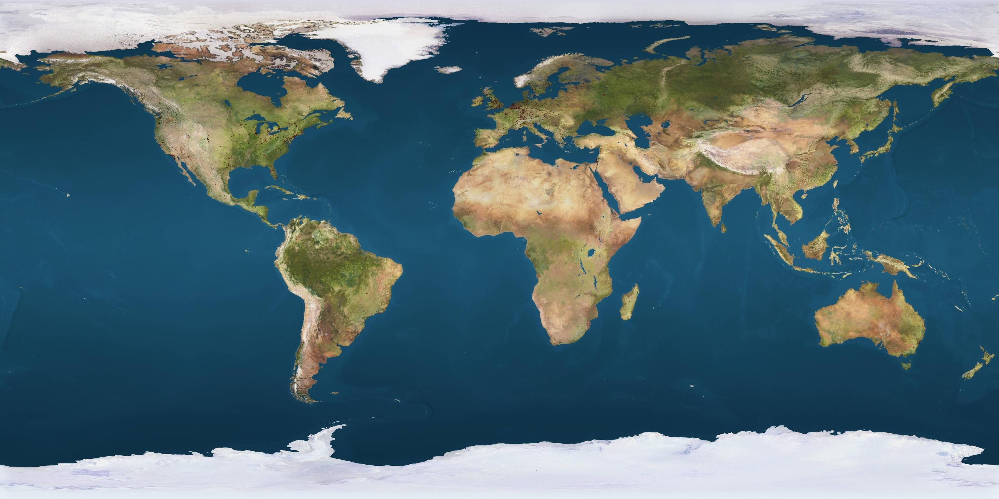My hobbies and interests are social justice activism, making videos and playing video games. In my Social Justice activism I was shocked to learn that there are thousands of horrible people who support the oppressor and never the victim, I was appauled by this, Every time a cop killed a black guy these people would always support the cop and not the victim, these people were horrible, I always supported the victim and also encourage heroism and self-defense. I make videos on my YouTube channel but the censorship on YouTube is equivilant to that of a Totalitarian Dictatorship and i hope to one day make my own video sharing platform that supports freedom of expression but also has no political bias like Rumble does, Not really Free Speech if it is so one sided is it. The video games i like to play are games which are included in Super Smash Bros And hope to make games about being a true hero, focused more on saving lives in game instead of killing.
Go to Martin Fowler's Blog| 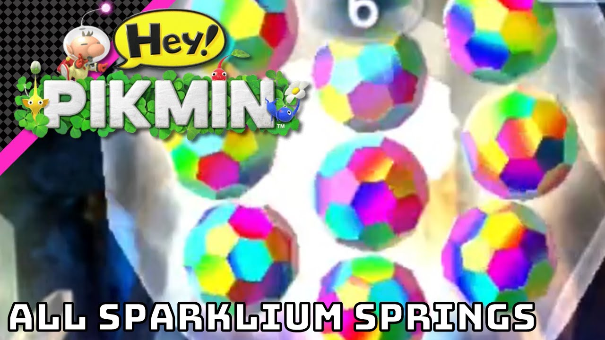 | 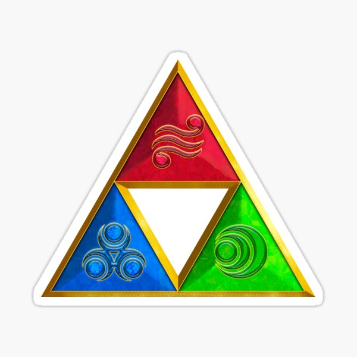 |
| 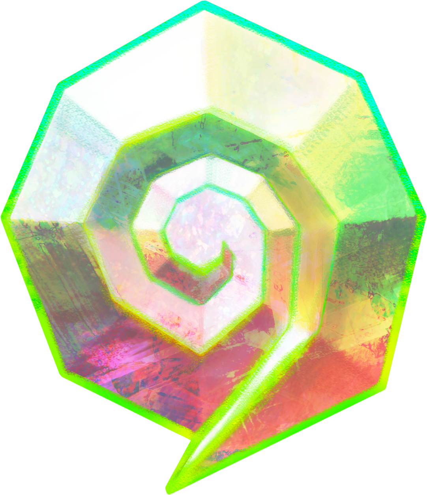 | 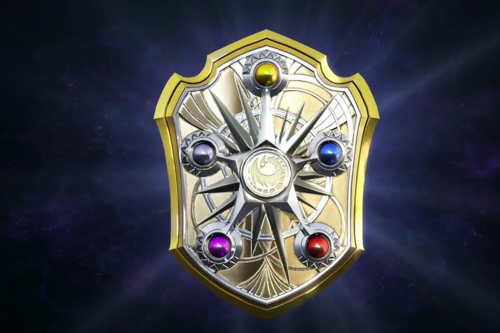 |
|
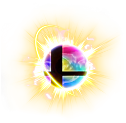 |